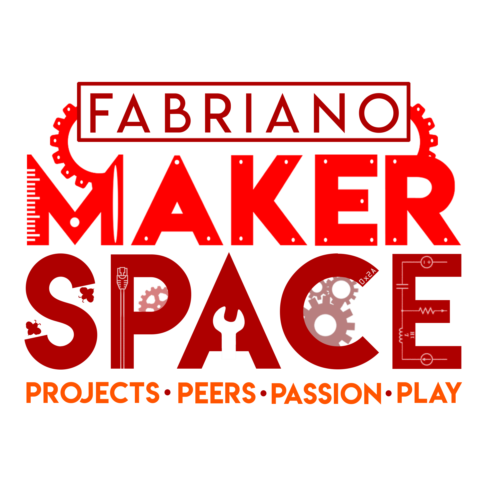
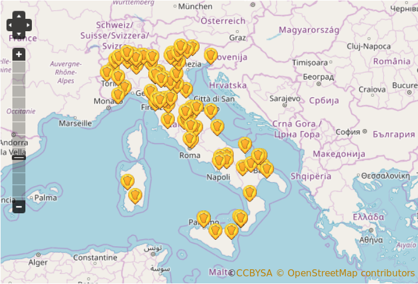
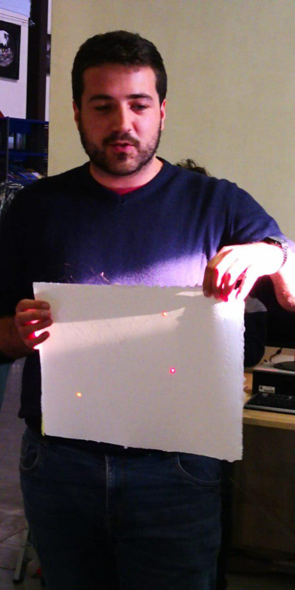
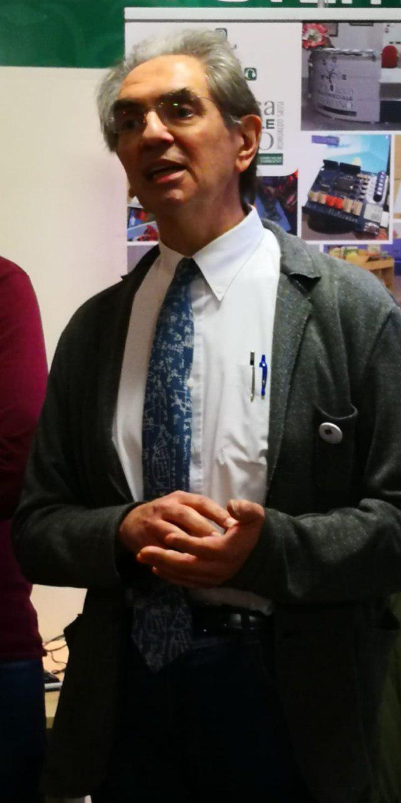
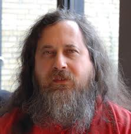

Linux Day 2018 - World Wild Web a Fabriano
Luca Ferroni - PDP FSUG https://pdp.linux.it - @ferodafabriano
#linuxday2018

Non siamo soli oggi...!



Oggi siamo qui grazie a...

... e ce lo racconta "la lettera di Enza" (Dossier Scuola 2010)